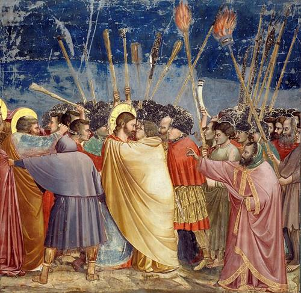

สมัยฟื้นฟูศิลปวิทยา หรือ ยุคเรเนซองส์ เป็นช่วงเวลาที่เกิดการเปลี่ยนแปลงทางวัฒนธรรมในทวีปยุโรป ซึ่งเป็นจุดเริ่มต้นของวัฒนธรรมยุคใหม่ ช่วงเวลานี้มีงานศิลปะออกมาเป็นจำนวนมาก
และวันนี้เราจะพาทุกท่านไปพบกับ 10 ผลงานจิตรกรรมชิ้นเอกแห่งยุคเรเนซองส์กัน
ผลงานจิตรกรรมชิ้นเอกแห่งยุคเรเนซองส์
อันดับ 10 The Birth of Venus โดย Sandro Botticelli ปี 1486
ปัจจุบันตั้งแสดงอยู่ที่หอศิลป์อุฟฟิซิ, เมืองฟลอเร็นซ์ ประเทศอิตาลี ซานโดร
บอตติเชลลีเขียนภาพ “กำเนิดวีนัส” ที่เป็นภาพของวีนัสลอยมาเกยฝั่งอย่างผู้หญิงเต็มตัว
อันดับ 9 The Assumption of the Virgin โดย Titian ปี 1518
Titian ใช้เวลาสองปีในการเขียนภาพ The Assumption of the Virgin
ซึ่งแบ่งเป็นสามตอนและใช้สีที่วิจิตร ซึ่งทำให้ทิเชียนกลายมาเป็นหนึ่งในช่างเขียนคนสำคัญที่สุดของกรุงโรม
อันดับ 8 Sistine Madonna โดย Raphael ปี 1512
ปัจจุบันภาพเขียน Sistine Madonna ตั้งแสดงอยู่ที่หอจิตรกรรมชั้นครูแห่งเดรสเดนที่เมืองเดรสเดนในประเทศเยอรมนี ตัวแบบในภาพยืนบนปุยเมฆที่ล้อมเป็นกรอบด้วยม่านหนาหนักสองข้าง
พระแม่มารีเองดูราวกับว่าลอยลงมาจากสวรรค์จากที่ว่างลวงตามายังที่ว่างจริงบริเวณหน้าภาพที่จะเห็นได้จากจุดโฟกัสที่พระหนุของพระองค์ นักบุญบาร์บาราปรายตามาทางผู้ศรัทธาที่เลยออกมาจากระเบียง
ด้านล่างภาพ มงกุฎพระสันตะปาปาด้านล่างซ้ายของภาพเป็นสิ่งที่เชื่อมระหว่างที่ว่างลวงตาของภาพและที่ว่างจริงนอกภาพ (real และ pictorial space)
อันดับ 7 Primavera โดย Sandro Botticelli ปี 1482
ปัจจุบันภาพเขียน Primavera ตั้งแสดงอยู่ที่หอศิลป์อุฟฟิซิในเมืองฟลอเร็นซ์ในประเทศอิตาลี ภาพนี้ได้รับการตีความหมายกันไปต่างๆ ที่รวมทั้งความหมายทางการเมืองว่าความรักคือโรม,
ไตรเทพี (three Graces) คือปิซา เนเปิลส์ และ เจนัว, เมอร์คิวรีคือมิลาน, ฟลอราคือฟลอเรนซ์, เมย์คือมานตัว, คลอริสและเซพไฟร์คือเวนิสและโบลซาโน นอกจากความหมายต่างๆ ที่ว่าแล้วภาพนี้ยังแสดง
ถึงธรรมชาติของความเป็นมนุษยชาติอย่างลึกซึ้ง เป็นภาพที่สะท้อนให้เห็นถึงอิทธิพลของวัฒนธรรมร่วมสมัยและเป็นการแสดงออกของเนื้อหาของวรรณกรรมคลาสสิก
อันดับ 6 The Last Judgement โดย Michelangelo Buonarroti ปี 1541
ภาพนี้ถูกเขียนไว้ภายในโบสถ์น้อยซิสทีน ในนครรัฐวาติกัน มีเกลันเจโลเขียนภาพ “The Last Judgement”
ระหว่างปี ค.ศ. 1534 ถึงปี 1541 สิบปีหลังจากการเขียนเพดานชาเปลซิสติน
อันดับ 5 The kiss of Judas โดย Giotto di Bondone ปี 1306

ตั้งอยู่ภายใน โบสถ์น้อยสโกรเวญญี เมืองปาดัวในประเทศอิตาลี
อันดับ 4 The School of Athens โดย Raphael ปี 1511

เป็นภาพหนึ่งในชุดภาพที่ราฟาเอลได้รับสัญญาให้วาดสำหรับวังพระสันตะปาปาในกรุงวาติกัน ซึ่งเป็นงานจิตรกรรมสำหรับตกแต่งห้องชุดที่ปัจจุบันเรียกว่า “ห้องราฟาเอล” ภาพตั้งอยู่ภายใน
“ห้องเซนยาทูรา” (Stanza della Segnatura) “สำนักแห่งเอเธนส์” ถือกันว่าเป็นงานชิ้นเอกของราฟาเอลและเป็นงานที่เป็นงานที่เพียบพร้อมไปด้วยลักษณะการเขียนภาพแบบเรอแนซ็องส์สูง
อันดับ 3 The Last Supper โดย Leonardo Da Vinci ปี 1498
นี่คือรูปภาพที่โด่งดังมาก ภาพนี้ไม่ได้แสดงอยู่ในพิพิธภัณฑ์แต่กลับอยู่บนผนังในห้องกินข้าวที่อารามซานตามารีย์ เดลเล กราซี ในเมืองมิลานประเทศอิตาลี ภาพวาดได้แสดงให้เห็นถึง
ฉากของอาหารค่ำมื้อสุดท้ายของพระเยซูคริสถ์และเหล่าสาวกของพระองค์ทั้งสิบสองคน การได้รับชมสุดยอมผลงานชิ้นโบว์แดงในอารามเล็กๆ คือหนึ่งในสถานที่ท่องเที่ยวที่ดีที่สุดในเมืองมิลานที่มอบให้กับคุณ
อันดับ 2 The Creation of Adam โดย ปี 1512
ถูกวาดไว้บนเพดานโบสถ์น้อยซิสทีนในนครรัฐวาติกัน ถูกวาดระหว่างค.ศ. 1508–1512 อิงเนื้อหาตามพระคัมภีร์ไบเบิลฉบับหนังสือปฐมกาล เป็นตอนที่พระเจ้าพ่นลมหายใจแห่งชีวิต
ให้แก่อาดัม มนุษย์คนแรก ภาพที่หัตถ์ของพระเจ้าใกล้จะแตะกับมือของอาดัมได้กลายเป็นสัญลักษณ์ของมนุษยชาติ และกลายเป็นภาพถูกลอกแบบตลอดจนถูกนำไปล้อเลียนนับครั้งไม่ถ้วน
อันดับ 1 The Mona Lisa โดย Leonado Da Vinci ปี 1571
ภาพวาดที่โด่งดังที่สุดในโลก วาดโดยลีโอนาโด ดา วินชี เป็นจุดเยี่ยมชมหลักของพิพิธภัณฑ์ลูฟวร์
ในกรุงปารีส ประเทศฝรั่งเศส ซึ่งมีคนเข้าเยี่ยมชมถึง 6 ล้านคนในทุกๆ ปี